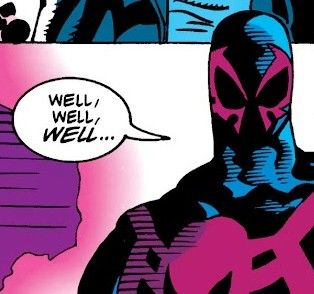

| Номер | #9 |
| Дата выхода | Июнь 2016 |
| Сценарист | Peter David |
| Художник | Will Sliney |
В комиксе Spider-Man 2099 (2014–2015) Мигель О’Хара из-за сбоя во времени попадает в альтернативное будущее. Этот мир разрушен, а власть в нём захватил Маэстро — Халк, сохранивший разум и ставший жестоким диктатором. Мигель пытается остановить его, но быстро понимает, что не может победить такого противника в открытом бою. Паук оказывается в плену и вынужден искать способ выжить и вернуться назад, осознав, насколько опасным может быть будущее.
